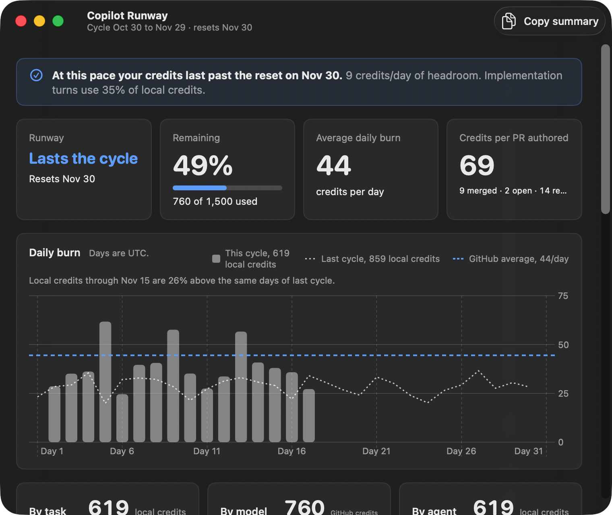
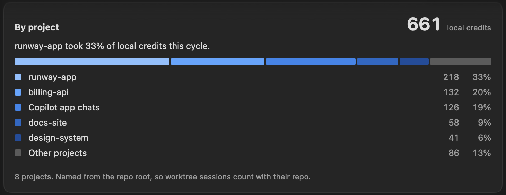
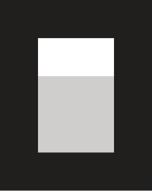

Menu bar
Percent left, plus the days left when you will run out early.
See the percent of credits left and the day you run out at your current pace. Free and open source, with no account: it reads your gh login.
brew install --cask wilsonfaustino/tap/copilot-runway
The General tab adds Copilot and Portkey spend in USD. The Copilot tab splits credits by project and lists the top sessions.

At this pace your credits last past the reset on Nov 30.
The pace went up. At this pace you run out on Nov 26, 4 days before the reset.
Less than a day of credits left. A runway notification told you first.
The app updates this sentence every 5 minutes, so you see the run-out date while you can still change how you work.
Credits by repo, and the top sessions labeled by date, agent, model and task. Never your prompts.

Percent left, plus the days left when you will run out early.
Pi, omp and OpenCode sessions through Portkey. Set a monthly budget to see their runway.
Count only weekdays, mark days off, and get a notification when the runway gets short.
No setup. It finds your gh login and the session files on your Mac.
gh login
OpenCodemacOS 26 or later. For Copilot credits: gh logged in and a usage-based Copilot plan. Portkey alone also works. Notarized from 1.0.0.